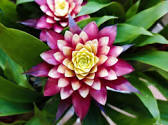

Nome Cientifico: Bromeliaceae
Nome Popular: Bromélia
Época de Plantio e Colheita: O plantio ocorre durante o ano todo, já a colheita depende da idade da planta e não o tempo do ano, algumas levam 3 anos (Guzmania e Billbergia) outras até 20 anos (Alcantarea)
Principais Pragas: Cochonilhas, lesmas, caracóis, lagartas, pulgões e ácaros
Controle: Evitar pesticidas e fungicidas
